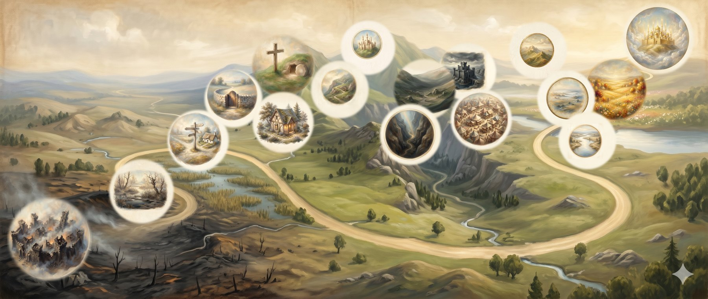

The whole road, seen at once. Below is an illustrated map of the pilgrim's journey — the seventeen landmarks of The Narrow Way, from the City of Destruction at the start to the Celestial City at its end, painted in the manner of an old storybook chart. It is here to be lingered over rather than navigated; to move through the road stop by stop, the map on the front page is still your guide.

The road, in order
Every place on the map is a real stop on this site, and most are doorways into a study or a wayside help. If a name is unfamiliar — the Slough of Despond, the Wicket Gate, Vanity Fair — the About the Journey page tells the old story in brief and explains each one.